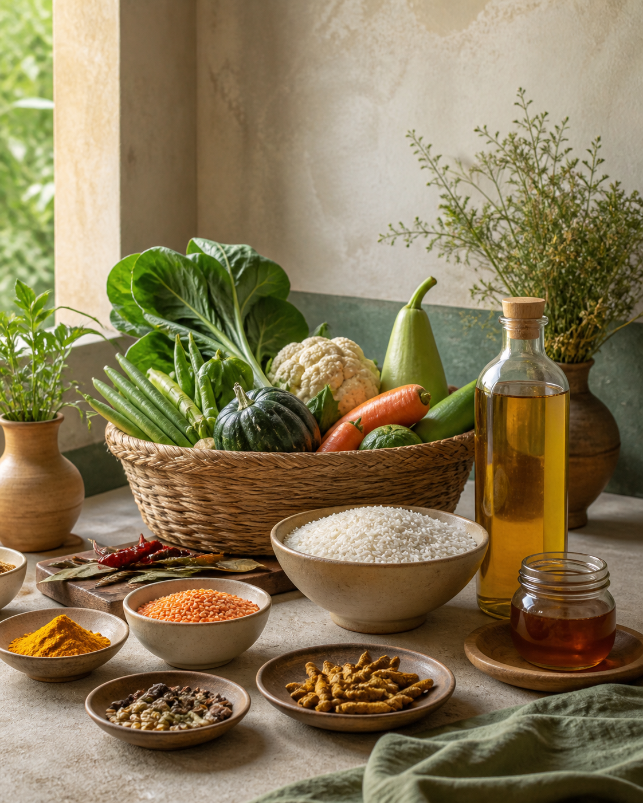
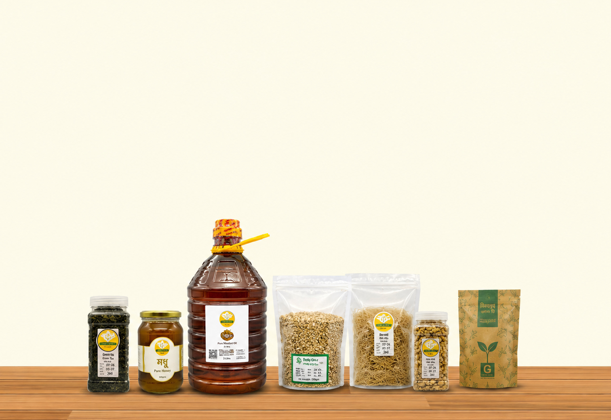
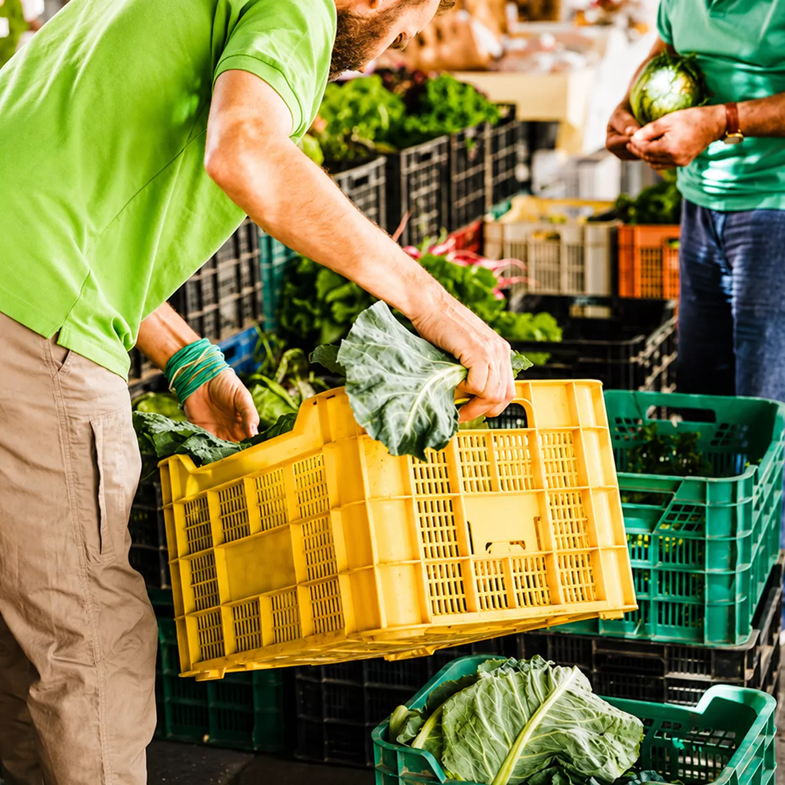

100% pure & natural
গিরস্তেই আস্থা
বিশুদ্ধ ও স্বাস্থ্যকর খাবারের মাধ্যমে গড়ে তুলুন একটি নিরাপদ পরিবার এবং নিশ্চিন্ত আগামী। Girosto প্রতিদিনের খাদ্যতালিকায় নিয়ে আসে মানসম্মত ও বিশ্বস্ত পণ্যের সমাহার।
এখনই কিনুন
Welcome to Girosto
It has become hard for many families in Bangladesh to find food that is naturally and genuinely trustworthy. Products labeled as pure or organic may still contain artificial colors, preservatives, excessive processing, or unclear ingredients, making it harder to choose safe everyday essentials.
Girosto was built to change that. We are a 100% organic food shop in Bangladesh; we source certified organic food directly from trusted farms, so every meal you make is clean, safe, and full of real nutrition.
Talk with UsExplore the pantry
Girosto brings together a wide selection of genuine organic and naturally sourced products for modern households. Explore essential food categories, wellness items, and everyday necessities in one convenient place. Here are our products.
Customer favourites
Discover the organic products most frequently chosen by Girosto customers for their daily needs. Our best-selling collection highlights popular grocery essentials, natural foods, and wellness items trusted by households across Bangladesh. Explore customer favorites and find dependable products for your kitchen and lifestyle.

New arrivals
Girosto is more than a place to purchase fruits or a few natural products. We aim to provide a complete organic pantry where customers can find rice, lentils, oils, spices, sweeteners, honey, nuts, dry fruits, seeds, pickles, and other daily essentials.
More than produce
The quality of organic food depends greatly on where it comes from and how it is processed. Girosto carefully considers product origin, ingredient information, preparation methods, packaging quality and supplier reliability before making products available to customers.

Why Girosto
At Girosto, we believe organic food should be accessible, not a luxury reserved for a few. Because of this, we remove needless middlemen, deal directly with growers, and pass the product to you without ever sacrificing quality. Every product on our shelves is chosen with one question in mind: would we feed this to our own family? If the answer isn't yes, it doesn't make it to Girosto. Here are some reasons why people choose us:
Shop Organic Groceries NowWide selection of organic and naturally sourced products
Carefully selected products from responsible suppliers
Clear product descriptions and ingredient information
Convenient online ordering from anywhere in Bangladesh
Traditional Bangladeshi food essentials available
Regular additions of seasonal and new products
Good to know
Still deciding? Talk with our team for product and delivery guidance.